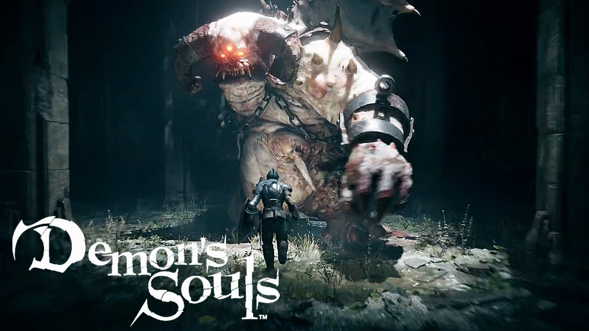

Про серію Souls
Souls (яп. ソウル, Sōru) — серія відеоігор жанру Action/RPG, розроблених японською компанією FromSoftware. Творцем серії та її основним розробником є Хідетака Міядзакі, керівник розробки всіх ігор серії, крім Dark Souls II. Першою грою в серії є Demon's Souls (2009), останньою — Dark Souls: Remastered (2018).
Геймплей ігор серії Souls базується на дослідженні світу, що складається із ряду взаємопов'язаних територій, та боїв з різноманітними чудовиськами за допомогою холодної зброї та магії; гравець керує персонажем з видом від третьої особи. Серія відома своє високою складністю — від гравця очікується, що він буде часто програвати битви та вчитись на своїх помилках.
Серія Souls є наступницею серії King's Field, що випускалася тією ж компанією в минулому та запозичує з неї певні елементи. В свою чергу, інші ігри, випущені компанією FromSoftware поза серією Souls — Bloodborne, Sekiro: Shadows Die Twice та розроблювана Elden Ring — містять схожі з серією Souls ігрові механіки, елементи та ідеї, настільки, що для опису серії Souls та Bloodborne разом інколи використовують термін Soulsborne. Ігри серії та в особливості їх бойова система справили великий вплив на розвиток жанру Action/RPG в 2010-х роках, що породило багато наслідувань та запозичень.
Світи ігор серії Souls — темне фентезі в стилістиці пізнього європейського середньовіччя, в світі якого можна зустріти багато атрибутів цього жанру: лицарі, різноманітні чудовиська, фортеці, собори. Кожна гра серії оповідає про якесь, колись заможне та процвітаюче королівство, яке до моменту гри занепало через низку подій. В Demon's Souls мета головного героя — запобігання розповсюдження демонічного туману, що несе паразитів, який врешті-решт може огорнути весь світ; герой Dark Souls II вишукує засоби зцілення від прокляття, котре перетворило його на нежить, тоді як в Dark Souls та Dark Souls III основною темою є цикл вогню та темряви, в підтримці або знищенні якого бере участь головний герой.
Ігровий процес
В кожній грі серії гравець може вибрати різноманітні характеристики головного героя: стать, зовнішній вигляд, ім'я та початковий клас. Класами представлені лицарі, воїни, злодії, чаклуни та інші. Кожен із класів володіє власним набором характеристик та стартовим спорядженням головного героя. Особливі очки — «душі», які можна отримати перемагаючи ворогів, або знаходячи розкидані по ігровому світу предмети — являють собою одночасно очки досвіду та гроші; гравець може за власним розсудом витратити їх на підвищення характеристик героя, або на купівлю різноманітних предметів у ігрових торговців, ковалів зброї та обладунків. «Вогнища» — особливі точки відпочинку та воскресіння — знаходяться в небагатьох безпечних зонах, як правило, тільки по одному на кожну область ігрового світу, і тільки біля такого «вогнища» можливо витратити зібрані душі на підвищення характеристик або відпочити, відновивши втрачені очки здоров'я.
Ігровий цикл ігор серії Souls можливо описати таким чином: гравець відвідує нову область світу, в цілому лінійну, але таку що має на шляху відгалуження та розвилки. В цій області знаходяться нові вороги і випробування, з якими герой початково не знає як впоратись, і деякі із цих ворогів можуть являти собою набагато більшу загрозу, ніж все, з чим гравець зіштовхувався у грі до цього моменту. Очікується, що на якомусь з етапів проходження ігровий персонаж загине; при цьому він повертається до життя біля найближчого полум'я, але всі зібрані гравцем душі залишаються в тій точці ігрового світу, де герой загинув. При кожній загибелі або воскресінні чи просто відпочинку біля полум'я всі вороги в ігровому світі, крім босів та міні-босів, також воскресають і повертаються на свої місця. Гравець може спробувати повернутись на місце попередньої загибелі та повернути всі втрачені душі, але якщо його персонаж знову загине, ці втрачені душі зникнуть назавжди. Ця небезпека втрати душ підштовхує гравця просуватись по грі якомога більш бережно, намагаючись уникнути чергової загибелі персонажу; очікується, що він буде використовувати знання про попередню невдачу, щоби цього разу успішно пройти небезпечне місце.
Онлайн складова ігор напряму інтегрована в ігровий процес однокористувацької кампанії. Так, наприклад, гравець може побачити привиди персонажів інших гравців, котрі що-небудь роблять, але з якими не можна взаємодіяти. Коли персонаж з іншого «світу» (ігрової сесії) помирає, на місці смерті з'являється червоний відбиток, аналогічний тому, що залишається можна врахувати для запобігання смерті з аналогічної причини. Інші гравці можуть залишати прямі текстові повідомлення, котрі також можуть слугувати порадою чи, навпаки, можуть обдурити. Повідомлення при цьому складаються за готовими шаблонами з обмеженого набору слів. Також є можливість підключення до іншої ігрової сесії для спільної гри, однак, схожим методом в світ може вторгнутись інший гравець в метою вбивства. Всі вищезазначені онлайн дії здійснюються за допомогою спеціальних внутрішньоігрових предметів.
Ігри серії
Demon's Souls
Demon's Souls, випущена в 2009 році на PlayStation 3, стала першою грою в серії Souls. Розробники описували її як ідейного спадкоємця серії ігор King's Field, котру студія FromSoftware випускала у минулому, однак Demon's Souls відрізнялась від ігор цієї серії, будучи заснованою на «зовсім іншій геймдизайнерській концепції». Крім старих ігор FromSoftware, розробники Demon's Souls черпали натхнення в таких іграх, як Ico, The Legend of Zelda, а також манзі «Берсерк», Saint Seiya та JoJo's Bizarre Adventure.
Події в Demon's Souls відбуваються в видуманому королівстві Болетарія, страждаючому від проклятого туману з якого з'являються хижі демони. На відміну від подальших ігор серії, Demon's Souls не містить єдиного відкритого світу — замість цього ігровий персонаж переміщується від безпечним «Нексусом» та п'яти відмінними «світами». Особлива механіка «світової тенденції», що не з'являлась в інших іграх серії, динамічно регулює складність гри в залежності від того, скільки босів персонаж переміг та скільки разів він загинув. Мережеві функції гри дозволяли гравцям залишати одне одному повідомлення та попередження, а також «вторгатись» в ігри інших гравців, щоб допомогти або, навпаки заважати їм в проходженні гри[20]. Битва з одним із босів гри, Старим Монахом, була побудована на експериментальній механіці — босом кожного разу керував інший гравець, так що поєдинок був по факту PvP-протистоянням. В 2018 році сервери гри були вимкнені, що зробило мережеві функції Demon's Souls недоступними.
Dark Souls
Dark Souls є ідейним спадкоємцем попередньої гри, даючи початок сюжетній лінії ігор Dark Souls. Реліз гри відбувся в 2011 році на платформах PlayStation 3 та Xbox 360. В 2012 році, на честь виходу видання Dark Souls: Prepare to Die Edition, що включав доповнення Artorias of the Abyss, відбувся реліз гри на Microsoft Windows. 25 травня 2018 року вийшла «remastered» версія для консолей нового покоління, PC та Nintendo Switch.
Dark Souls II
Друга частина серії, що вийшла в 2014 році на платформах Microsoft Windows, PlayStation 3 і Xbox 360, сюжетно продовжує Dark Souls. Однак, керівником розробки став не Хідетака Міядзакі, що працював над двома попередніми частинами, а Юі Танімура. В 2015 році, представляючи трійку доповнень із серії The Lost Crowns, відбувся вихід Dark Souls II: Scholar of the First Sin на всіх попередніх платформах, а також PlayStation 4 і Xbox One.
Dark Souls III

Dark Souls III, офіційно оголошена останньою грою серії, вийшла 24 березня 2016 року в Японії і потім 12 квітня того ж року для решти світу на платформах Microsoft Windows, PlayStation 4, і Xbox One.
Пов'язані ігри
З 1994 по 2006 роки студія FromSoftware випускала серію ігор King's Field. Хоча між серіями King's Field та Souls немає прямого зв'язку, їх об'єднує висока складність та схожий дизайн; обидві серії демонструють похмурі та таємничі світи в стилістиці темного фентезі, що часто залишає те що відбувається на екрані без пояснень. Хідетака Міядзакі в інтерв'ю журналу Game Informer спростовував чутки про те, що гра Demon's Souls нібито розроблялась як нова частина серії King's Field, але погоджувався, що серія King's Field безумовно вплинула на ідеї, що стоять за Demon's Souls. Так, характерна для серії Souls «шкала витривалості» вперше з'явилась в King's Field IV (2004). В той самий час гра Shadow Tower (1998) та її продовження Shadow Tower Abyss (2003) також включали в себе певні елементи, використані згодом в серії Souls, а саме: розвинену систему екіпіровки, велика кількість зброї, ворожих та дружніх неігрових персонажів; Otogi: Myth of Demons (2002) мала дуже схожу з Demon's Souls зав'язку і вводила ряд тем, спільних для ігор серії Souls.
Гра Bloodborne, випущена FromSoftware в 2015 році, вирізнялась надзвичайною схожістю ігрового процесу та подачею сюжету з серією Souls; при цьому дія гри відбувається в окремому вигаданому всесвіті, і замість звичного для серії Souls середньовічного сетинґу Bloodborne використовує теми та образи вікторіанської епохи та лавкрафтівських жахів. Самі розробники, не дивлячись на подібність Bloodborne до їхніх попередніх проектів, заперечували, що Bloodborne має бодай якийсь стосунок до серії Souls, та стверджували, що гра не є ні продовженням, ні навіть ідейним спадкоємцем Demon's Souls. При цьому різноманітні видання використовували назву Soulsborne, щоб описати серію Souls та Bloodborne разом.
Подібним чином, випущена в 2019 році гра Sekiro: Shadows Die Twice, не дивлячись на зовсім інший сетинґ— Японію епохи Сенґоку — містить ряд знайомих за серією Souls геймплейних елементів та навіть схожих за виконаннм ролей персонажів; і знову творець серії Хідетака Міядзакі заявляв в інтерв'ю, що "«Sekiro не створювалась як черговий еволюційний етап для Soulsborne, для серії Souls… це абсолютно нова концепція».
В 2016 році в рамках рекламної кампанії Dark Souls III компанія Bandai Namco випустила для мобільних пристроїв безкоштовну гру Slashy Souls — нескінченний ранер в стилістиці серії Souls. В цій грі персонаж гравця — лицар з дворучним мечем — повинен постійно бігти від стіни туману, що постійно насувається на героя, борючись з ворогами та перестрибуючи через прірви. Гра не має жодної цілі чи фіналу та продовжується нескінченно довго, поки персонаж гравця не загине. Slashy Souls отримала негативні відгуки оглядачів в першу чергу через незручне керування.